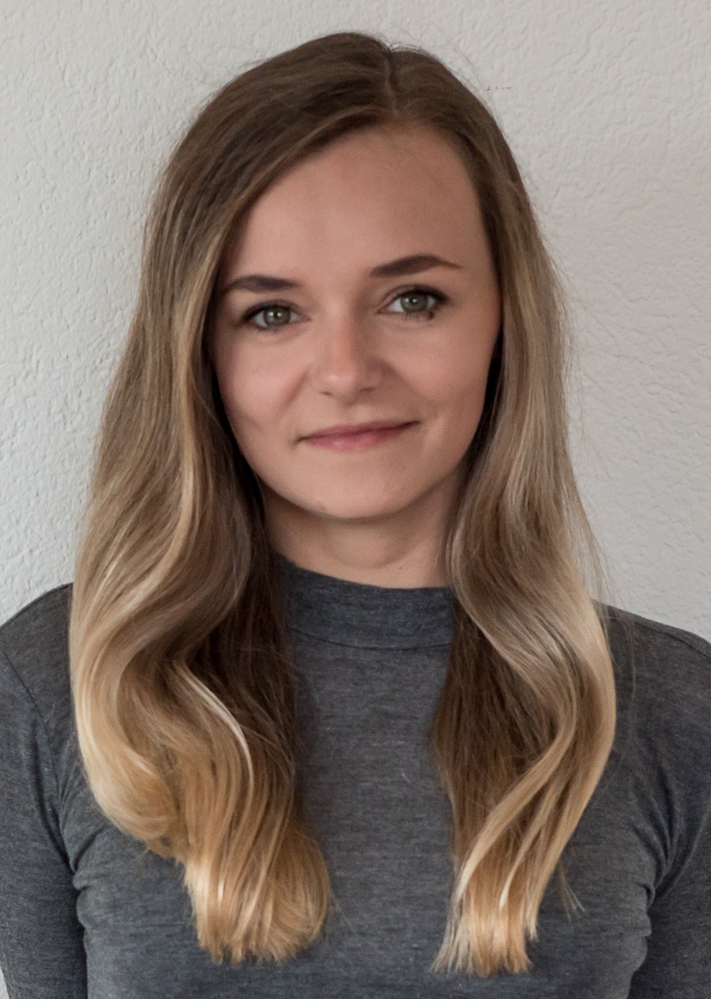

Z praca w firmie odzieżowej może być różnie, zależy do jakiej firmy trafisz, potem zależy do jakiego zespołu w tej firmie trafisz, potem jakich ludzi w tym zespole będziesz miał. Moją pierwszą firmą było LPP, zaczęłam swoją przygodę jako asystent projektanta w Reserved w dziale dzianin (dla nie wtajemniczonych z dzianin robione są koszulki, bluzy, swetry i niektóre sukienki) a dokładniej byliśmy odpowiedzialni za damską kolekcję swetrów, bluz i sukienek dzianinowych. I ogólnie mogę stwierdzić po czasie, że miałam szczęście, zespół, do którego trafiłam był dobry. Na początku nie było łatwo, firma miała trochę problemów i nie do końca potrafiła sobie poradzić z prawidłowym zarządzaniem ludźmi, przez co marnowała bardzo dużo potencjału. Niestety jak to często bywa, że zmiany zaczyna się wprowadzać jak już jest bardzo źle. Ludzie zaczęli masowo odchodzić z pracy, wyniki firmy leciały w dół w zastraszającym tempie. Na szczęście nie było jeszcze za późno i w porę zostały wprowadzone spore zmiany. I po trudnych moich początkach zaczęło być fajnie. Po dwóch latach dostałam awans na młodszego projektanta i zaczęło się robić ciekawiej. Praca projektanta w firmie odzieżowej wiąże się z dużą ilością podróży. Najczęściej są to wyjazdy do dostawców, żeby szybciej i łatwiej pracować nad kolekcją. Czasem rzeczy, które próbowaliśmy wytłumaczyć miesiącami droga mailową byliśmy w stanie rozwiązać w przeciągu jednej wizyty u dostawcy. Więc odwiedziłam takie kraje jak Chiny, Turcja i Bangladesz. Wyjazdy to zawsze była kupa pracy i to do późnych godzin ale tez ogromna satysfakcja. Po ponad 4 latach musiałam odejść z pracy, ponieważ spełniało się jedno z moich największych marzeń, czyli przeprowadzka do innego kraju. I tak zaczął się kolejny rozdział ‘Szwajcaria’.
